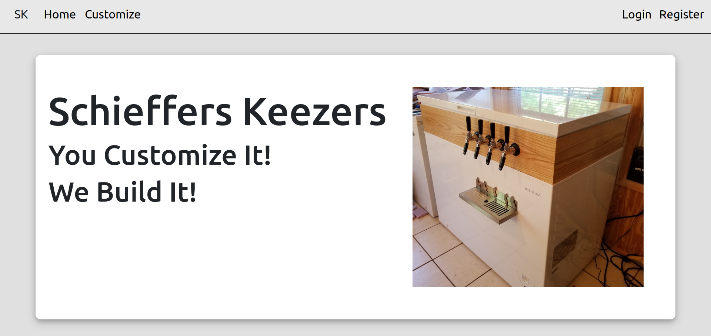
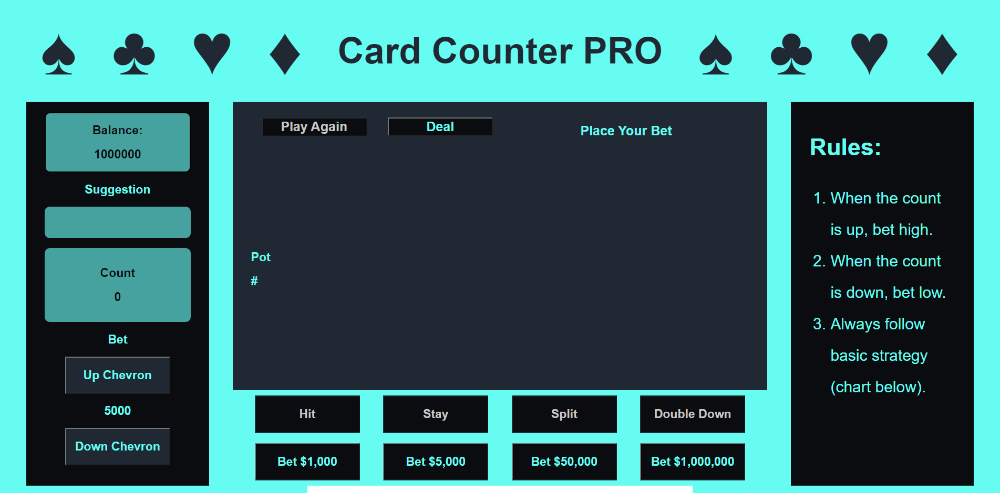

Schieffers Keezers
I built a full stack web application for Schieffers Keezers, a business a friend of mine is starting. It is an ecommerce website with a React frontend, a Node backend, and a Postgres database.

Python Algo
I built a Python algorithm that automates stock trading. It uses the Alpaca Broker Api to get information about stocks and place trades on behalf of my account.

Card Counter PRO
I built a Black Jack web game with features for counting cards. It keeps track of the count and uses basic strategy to make strategic suggestions about how to play each hand.